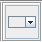

| 1 |
ComboBox Demo |
- Tab until ComboBox icon has focus. Press 'Space' to choose.
- Tab until the "ComboBox Demo" tab has focus. Press 'space'. Press 'tab'.
- Use Tab and Shift-Tab to move between the four ComboBox widgets.
- Use the space and down arrow keys to bring up the drop-down list.
- Use the up and down arrows to navigate up and down the list.
- Use the 'space' key to make a the selection.
- Repeat 4,5 but hit Esc key to cancel the drop-down.
|